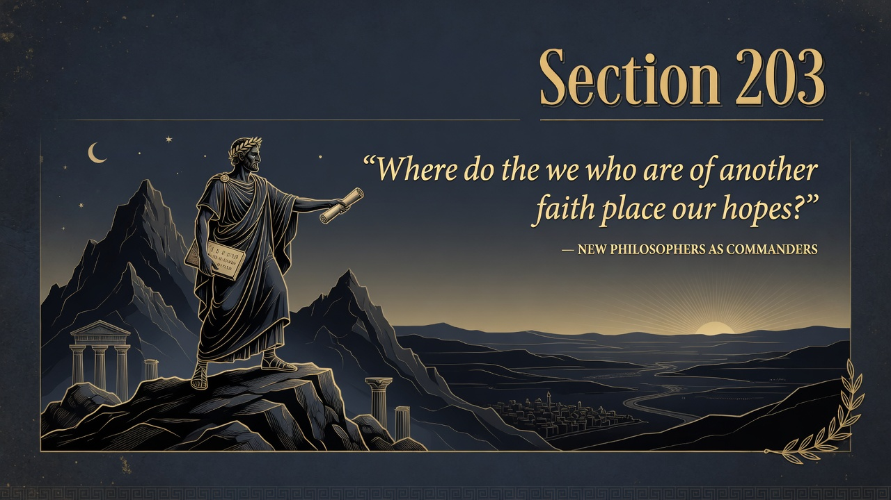
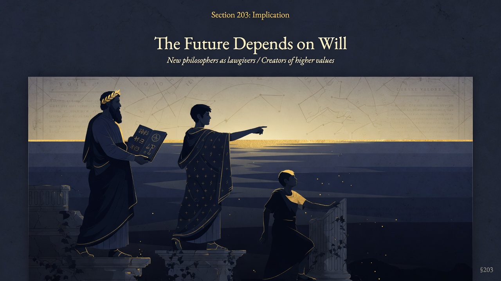

Part Five: On the Natural History of Morals • Beyond Good and Evil
Section 203 is the dramatic and prophetic close of Part Five. Having diagnosed the leveling force of herd-animal morality, Nietzsche turns to those who might yet reverse the direction: the philosophers of the future. They are not scholars, critics, or academic laborers. They are commanders and legislators who will create new values and revalue the old. Their task is nothing less than to teach humanity that its future depends upon human will rather than upon accident, tradition, or divine decree.
The section opens with a question of faith: “Where do the we who are of another faith place our hopes?” Nietzsche’s different faith is directed toward these new philosophers. They will be “men of the most comprehensive responsibility who have the conscience for the overall development of man.” They will understand that the enhancement of the human type requires the deliberate cultivation of higher types, not the universal comfort of the herd. In doing so they will be “attempters” (Versucher)—experimenters, tempters, seekers who dare to create rather than merely interpret or justify what already exists.
Key insight: the future is not determined by history or biology alone; it is a matter of will, selection, and creation. The philosopher in the highest sense does not discover eternal values—he legislates new ones. This is the positive counterpart to the critique of morality: after the diagnosis of herd timidity comes the call for those strong enough to will a different future.
Modern companion relevance: In a time when technological, genetic, and cultural powers make deliberate human enhancement thinkable (AI, biotechnology, education, culture), the question of who will command the direction of these powers and according to what values is unavoidable. The dominant discourse still defaults to herd values—safety, inclusion, accessibility for all—while avoiding the harder question of rank and the deliberate cultivation of excellence. Nietzsche challenges us to ask whether we still possess or can produce the type of human who can take responsibility for the species’ highest possibilities rather than merely managing its mediocrity. The new philosophers would not flatter the present; they would create conditions in which something higher than the present can appear. ~310 words. Direct from the text and context of Part Five (Kaufmann).

